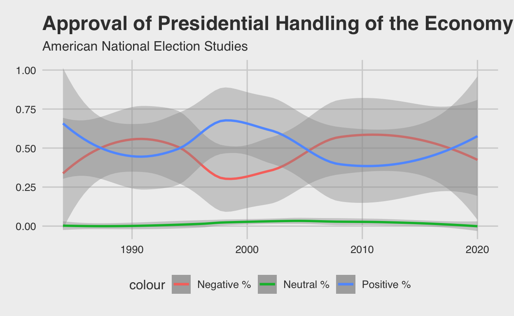
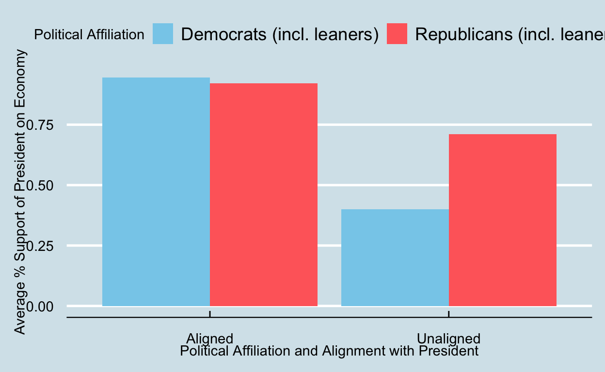
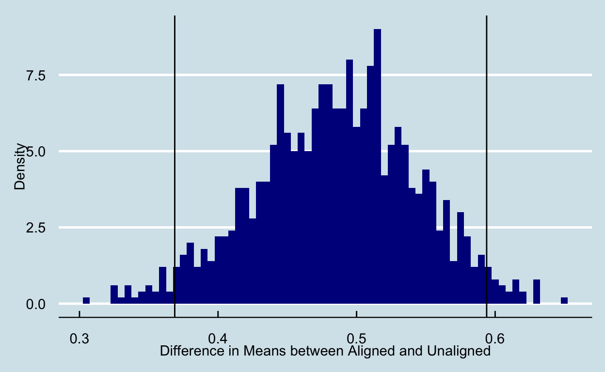

Political and Partisan Influences on Perception of the President’s Conduct on Economic Policy
My research project explores the potential biases in alignment and its effect on the perception of the President’s handling of the economy. More specifically, in this study I focus on the question, does political alignment with the president impact approval of the executives handling of the economy? During Democratic administrations, I expect Democrats to approve more on average of the executives handling of the economy, while Republicans will approve less on average. Similarly during a Republican administration, I expect Republicans to approve more on average with the President’s handling of the economy, while Democrats will approve less on average.
My sample is comprised of American voting-age adults during Presidential and Midterm elections since the year 1984. My unit of analysis is American voting-age adults. The explanatory variables of interest is whether there is a the ideology of respondents and their poltical alignment with that of the President.. My outcome variables is the the percentage of U.S. voting age adults that support Presidential handling of the economy. If I observe higher approval from those of the political ideology with that which aligns with the President(ex. Democrat voter under Democrat President) than those that don’t align, I will have evidence for my hypothesis.
Wrangled with and merged two tables (one built-in and one imported) to provide all necessary variables needed for my visualizations and subsequent analysis.
library(tidyverse)
library(readxl)
library(ggthemes)
presidents <- presidential |>
mutate(end = strftime(presidential$end, format="%Y")) |>
filter(end >= 1984) |>
rename(President = name,
Party = party) |>
mutate(President = case_when(President == 'Bush' & end == 1993 ~ "H. W. Bush",
President == 'Bush' & end == 2009 ~ "W. Bush",
TRUE ~ President)) |>
select(-c(start, end))
overall_president_opinion <- read_csv("~/Downloads/The Guide to Public Opinion and Electoral Behavior (2).csv") |>
filter(Demographics == 'pid' & Subgroup != 'Independents') |>
mutate(Approve = `Approve strongly` + `Approve not strongly`,
Disapprove = `Disapprove not strongly` + `Disapprove strongly`,
President = case_when(Year <= 1988 ~ "Reagan",
Year > 1988 & Year <= 1992 ~ "H. W. Bush",
Year > 1992 & Year <= 2000 ~ "Clinton",
Year > 2000 & Year <= 2008 ~ "W. Bush",
Year > 2008 & Year <= 2016 ~ "Obama",
Year > 2016 ~ "Trump")) |>
rename(`Political Affiliation` = Subgroup) |>
select(-c(`Approve strongly`, `Approve not strongly`, `Disapprove not strongly`, `Disapprove strongly`, `Demographics`)) |>
inner_join(presidents) |>
mutate(`Alignments` = if_else(Party == 'Republican' & `Political Affiliation` == 'Republicans (incl. leaners)' |
Party == 'Democratic' & `Political Affiliation` == 'Democrats (incl. leaners)' ,'Aligned', 'Unaligned')) |>
arrange(Year)
knitr::kable(overall_president_opinion)| Political Affiliation | Total Cases | Year | Don’t Know | Approve | Disapprove | President | Party | Alignments |
|---|---|---|---|---|---|---|---|---|
| Democrats (incl. leaners) | 1000.0 | 1984 | 1.0 | 314.0 | 685.0 | Reagan | Republican | Unaligned |
| Republicans (incl. leaners) | 845.0 | 1984 | 1.0 | 743.0 | 101.0 | Reagan | Republican | Aligned |
| Democrats (incl. leaners) | 1011.0 | 1986 | 1.0 | 404.0 | 606.0 | Reagan | Republican | Unaligned |
| Republicans (incl. leaners) | 736.0 | 1986 | 2.0 | 611.0 | 123.0 | Reagan | Republican | Aligned |
| Democrats (incl. leaners) | 897.0 | 1988 | NA | 256.0 | 641.0 | Reagan | Republican | Unaligned |
| Republicans (incl. leaners) | 791.0 | 1988 | NA | 652.0 | 139.0 | Reagan | Republican | Aligned |
| Democrats (incl. leaners) | 945.0 | 1990 | 1.0 | 300.0 | 644.0 | H. W. Bush | Republican | Unaligned |
| Republicans (incl. leaners) | 661.0 | 1990 | 2.0 | 398.0 | 261.0 | H. W. Bush | Republican | Aligned |
| Democrats (incl. leaners) | 1217.0 | 1992 | NA | 77.9 | 1139.1 | H. W. Bush | Republican | Unaligned |
| Republicans (incl. leaners) | 899.4 | 1992 | NA | 389.7 | 509.7 | H. W. Bush | Republican | Aligned |
| Democrats (incl. leaners) | 791.2 | 1994 | NA | 584.4 | 206.7 | Clinton | Democratic | Aligned |
| Republicans (incl. leaners) | 676.7 | 1994 | NA | 199.8 | 476.9 | Clinton | Democratic | Unaligned |
| Democrats (incl. leaners) | 873.4 | 1996 | 0.6 | 730.7 | 142.2 | Clinton | Democratic | Aligned |
| Republicans (incl. leaners) | 629.9 | 1996 | NA | 256.6 | 373.3 | Clinton | Democratic | Unaligned |
| Democrats (incl. leaners) | 637.9 | 1998 | 0.7 | 603.0 | 34.2 | Clinton | Democratic | Aligned |
| Republicans (incl. leaners) | 454.5 | 1998 | 0.4 | 322.9 | 131.2 | Clinton | Democratic | Unaligned |
| Democrats (incl. leaners) | 893.7 | 2000 | 26.1 | 781.8 | 85.8 | Clinton | Democratic | Aligned |
| Republicans (incl. leaners) | 658.6 | 2000 | 69.9 | 345.8 | 242.8 | Clinton | Democratic | Unaligned |
| Democrats (incl. leaners) | 704.9 | 2002 | 15.7 | 257.4 | 431.7 | W. Bush | Republican | Unaligned |
| Republicans (incl. leaners) | 626.2 | 2002 | 15.5 | 507.8 | 102.9 | W. Bush | Republican | Aligned |
| Democrats (incl. leaners) | 591.0 | 2004 | 15.6 | 62.5 | 512.9 | W. Bush | Republican | Unaligned |
| Republicans (incl. leaners) | 483.7 | 2004 | 10.9 | 368.0 | 104.7 | W. Bush | Republican | Aligned |
| Democrats (incl. leaners) | 1174.8 | 2008 | 15.5 | 74.1 | 1085.3 | W. Bush | Republican | Unaligned |
| Republicans (incl. leaners) | 851.5 | 2008 | 29.7 | 467.2 | 354.7 | W. Bush | Republican | Aligned |
| Democrats (incl. leaners) | 987.0 | 2012 | 54.5 | 726.7 | 205.7 | Obama | Democratic | Aligned |
| Republicans (incl. leaners) | 833.8 | 2012 | 21.5 | 92.2 | 720.1 | Obama | Democratic | Unaligned |
| Democrats (incl. leaners) | 1944.6 | 2016 | 13.1 | 1631.0 | 300.5 | Obama | Democratic | Aligned |
| Republicans (incl. leaners) | 1668.7 | 2016 | 12.4 | 317.6 | 1338.7 | Obama | Democratic | Unaligned |
| Democrats (incl. leaners) | 3805.2 | 2020 | 3.9 | 586.2 | 3215.2 | Trump | Republican | Unaligned |
| Republicans (incl. leaners) | 3455.6 | 2020 | 2.8 | 3186.6 | 266.2 | Trump | Republican | Aligned |
I analyzed overall parameter approval and disapproval of the President’s handling of the economy over multiple administrations and decades, along with a visual of the average differences in average approval with the alignment and political affiliation variables.
overall_president_graph <- overall_president_opinion |>
group_by(Year) |>
summarize(perc_approve = `Approve`/`Total Cases`,
perc_disapprove = `Disapprove`/`Total Cases`,
perc_unsure = `Don't Know`/`Total Cases`) |>
ggplot(aes(x = Year)) +
geom_smooth(aes(y = perc_disapprove, color = "Negative %", method = "loess", se = FALSE)) +
geom_smooth(aes(y = perc_approve, color = "Positive %", method = "loess", se = FALSE)) +
geom_smooth(aes(y = perc_unsure, color = "Neutral %", method = "loess", se = FALSE)) +
labs(x = "Year", y = "Percent",
title = "Approval of Presidential Handling of the Economy",
subtitle = "American National Election Studies") + theme_fivethirtyeight()
overall_president_graph
This graph utilizes data directly imported and wrangled from American National Election Studies, showing overall opinions on the President’s handling of the economy overtime among Democrats and Republicans (ignoring independents) from 1984 to 2020. As shown, those that were neutral, responding ‘Don’t Know’, is roughly 0 across all years. However, those that approve (respondents that ‘Approve strongly’ or ‘Approve not strongly’) or disapprove (respondents that ‘Disapprove strongly’ and ‘Disapprove not strongly’) of the President’s handling have varying percentages across time, with what appears to be an oscillating relationship between the two.
alignment_support_plot <- overall_president_opinion |>
mutate(avg_support = `Approve`/`Total Cases`) |>
ggplot(mapping = aes(x = Alignments, y = avg_support, fill = `Political Affiliation`)) + geom_col(position = "dodge") + labs(x = "Political Affiliation and Alignment with President" ,
y = "Average % Support of President on Economy") + scale_fill_manual(values = c('Democrats (incl. leaners)' = "skyblue", 'Republicans (incl. leaners)' = "indianred1")) + theme_economist()
alignment_support_plot
In respect to political alignment with the President, in general, those that are ideologically aligned with the President are more likely on average to approve of the Presidents handling of the economy than those that are ideologically unaligned with the President. Political alignment with the President appears to have a greater difference than political affiliation in regards to approval of the Presidents handling of the economy. Aligned Democrats and aligned Republicans have roughly the same average approval of the President’s performance in regards to the economy. However, there are greater differences among unaligned Democrats and unaligned Republicans, with a margin of roughly .3.
Therefore, there are larger disparities among aligned and non-aligned with the President than Democrats and Republicans in regards to the Presidents approval of the economy. However, we can’t determine if there is a casual effect based off of this graph alone, due to the potential presence of confounding variables, such as actual economic performance and government policies, which could impact the average approval of the President’s handling of the economy.
library(modelsummary)
overall_president_opinion <- overall_president_opinion |>
mutate(avg_support = `Approve`/`Total Cases`)
fit_DiM <- lm(avg_support ~ Alignments + `Political Affiliation`, data = overall_president_opinion)
modelsummary::modelsummary(fit_DiM, statistic = c("s.e. = {std.error}", "p = {p.value}"),
gof_map = c("nobs", "r.squared", "adj.r.squared"))| (1) | |
|---|---|
| (Intercept) | 0.757 |
| s.e. = 0.057 | |
| p = <0.001 | |
| AlignmentsUnaligned | −0.480 |
| s.e. = 0.062 | |
| p = <0.001 | |
| Political AffiliationRepublicans (incl. leaners) | 0.025 |
| s.e. = 0.062 | |
| p = 0.692 | |
| Num.Obs. | 30 |
| R2 | 0.704 |
| R2 Adj. | 0.682 |
Running a multivariable regression of the average support for the President’s handling of the economy, we obtain a coefficient of -.48 for the alignments variable. This means that those that are unaligned experience a .48 drop on average in their support of the President’s handling of the economy compared to those that are aligned. With a p-value of less than .001, we can reject the null hypothesis of no statistically significant effect in the alignment variable since the p-value is less than the pre-specified significance value of alpha = 0.05. Additionally, we obtain a coefficient of .025 for the political affiliation variable. This means that those that are Republican experience a .025 increase compared to Democrats in approval of the President’s handling of the economy. With a p-value of less than .692, we fail to reject the null hypothesis of no effect at the pre-specified significance value of alpha = 0.05. With an adjusted coefficient of determination (which is better to use when dealing with multiple independent variables) of .682, this means that 68.2% of the variation in the average support of the President’s handling of the economy is explained by the variation in the alignments and political affiliation variables.
library(infer)
set.seed(02138)
affiliations_boots <- overall_president_opinion |>
rep_slice_sample(prop = 1, replace = TRUE, reps = 1000) |>
group_by(replicate, Alignments) |>
summarize(avg_support = mean(`Approve`/`Total Cases`), na.rm = TRUE) |>
pivot_wider(names_from = Alignments, values_from = avg_support) |>
mutate(DiM = `Aligned` - `Unaligned`) |>
select(replicate, DiM)
affiliations_ci_95 <- affiliations_boots |>
get_confidence_interval(level = .95, type = "percentile")
knitr::kable(affiliations_ci_95, col.names = c("Lower CI Bound", "Upper CI Bound"))| Lower CI Bound | Upper CI Bound |
|---|---|
| 0.3687482 | 0.593884 |
As generated, I calculated a 95% confidence interval for the difference in means between average support of the President’s handling of the economy between those that are ideologically aligned and unaligned with the executive. The 95% confidence interval is 0.3687482 to 0.593884. Since 0 isn’t within the 95% confidence interval’s lower and upper bounds, at the pre-specified significance value of alpha = 0.05, we reject the null hypothesis of no difference in means.
affiliation_DiM_dist <- affiliations_boots |>
ggplot(aes(x = DiM)) +
geom_histogram(aes(y = after_stat(density)), binwidth = .005, fill = "darkblue") + geom_vline(xintercept = unlist(affiliations_ci_95)) + labs(x = "Difference in Means between Aligned and Unaligned",
y = "Density") + theme_economist()
affiliation_DiM_dist
This graph is a null distribution for the difference in means between aligned and unaligned adults with bootstrap, repeated samples of the observed differences in the DiM when we retain the null hypothesis. As shown by our previous analysis of the 95% confidence interval, which doesn’t contain 0 within the upper and lower bounds, we reject the null hypothesis, which would also be the case when conducting a two-sided permutation test when the pre-specified significance value is alpha = 0.05, meaning the difference in means between aligned and unaligned adults and their average approval of the President’s handling of the economy is statistically significant.
Political alignment with the party of the President does in fact lead to an average increase in support for the executive’s handling of the economy. As shown by the rejection of the null hypothesis of no difference in means between aligned and unaligned average support, the alignment of a persons politically ideology with that of the President’s is statistically significant in determining their support of the executive’s handling of the economy. However, the potential for confounding variables such as periods of recession, the unemployment rate, inflation rates, and other factors that reflect actual economic performance could impact approval ratings despite political affiliation and alignment.
Thus, my study was limited due to a lack of analysis based on economic trends that were occuring at the time of each election cycle,, such as a recession, such as occured and 2008, a time when a noticeable increase in the proportioin of disapprove increase and a decrease in the proportion of those that approved for the entire population. If I had more time/resources, I could run a multiple regression that includes the unemployment rate and if the economy was considered to be in a refression to see if those also impact the trends in the differences in means of aligned and unaligned in their average approval of the President’s conduct on the economy.